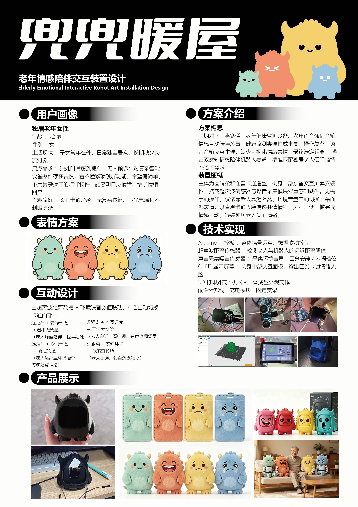

基于 Arduino 开发的老年情感陪伴机器人与 Web 可视化监测底座

采用 Renesas RA4M1 主控，内置 ESP32-S3 提供高速的本地与物联网控制。
集成 Adafruit IO 云端通道，实现低延迟的双向指令下发与遥测上报。
硬件层使用双阈值迟滞（Hysteresis）算法，有效滤除物理环境突发扰动。
15秒无活动自动进入打盹（SLEEP）状态，仅大动静或声音方可惊醒，防止视觉过载。
实时渲染机器人头部 OLED 屏幕表情与情感状态响应：
🎛️ 传感器数值模拟器 / Interactive Input Simulator:
使用 Adafruit IO 的 MQTT 协议，实现 GitHub 网页端与物理机器人的跨地域双向互联。
本项目致力于针对独居老年人（或其他需要情感关怀的特殊群体），开发一款低成本、高可靠性、具备柔和感官体验的情感陪伴机器人。机器人通过主动感知环境声音和老年人的接近距离，自动调整自身的表情状态（平静、快乐、伤心、微笑、难过、兴奋），从而提供无声但温馨的“情绪陪伴”。设计理念遵循非侵入式、低感官刺激、可预测性，避免突兀的声光报警给老年人带来焦虑，为老年人构筑一个充满安全感的交互环境。
通过实时表情交互，为独居老人提供温馨的视觉陪伴与互动反馈。
不使用刺眼的强光或刺耳 of 警报音，完全通过平滑的 OLED 表情温和响应。
设置最短表情显示延迟（630ms），避免因短暂外界噪音造成表情剧烈跳动。
支持将交互频率、声音及距离数据上传云端，让子女能远程感知父母的活跃状态。
MIN_DISPLAY_TIME (630ms) 的最短状态显示时间锁。
利用 HS-S05B 声音模块捕捉老人的说话声、呼唤声或室内环境噪音。通过滤波算法滤除随机毛刺，计算出平滑的声强数据。
利用 HC-SR04 超声波测距传感器，实时计算老人的接近距离。采用三点中值滤波算法，消除测距异常跳变，确保数据准确稳定。
将 0.96" SSD1306 OLED 屏幕作为机器人的“面部”，由 Adafruit_SSD1306 库驱动，以 42ms 的帧间隔（24FPS）平滑循环显示当前情绪的动态点阵图画。
利用 Arduino 控制器的联网功能，将获取的距离、声音及情绪数据推送至 Web 可视化网关，方便监护人或看护中心监测老年人的日常起居活跃度。
作为核心控制大脑，负责传感器数据滤波、情绪状态机判定、SSD1306 屏幕像素驱动以及数据串口/网络外发。
利用声波发射与接收的时间差计算距离。测距范围 2cm - 400cm，分辨率可达 3mm。主要判定近距交互（迟滞比较：切入 < 40cm，切出 > 50cm）与远距陪伴状态（切入 > 85cm，切出 < 75cm）。
内置驻极体话筒与放大器，输出代表声音强度的模拟变化波形。主控通过峰峰值检测提取音量，大声判定阈值设定为 LOUD > 250，小声与安静判定阈值设定为 QUIET > 30。
128x64 高对比度单色自发光点阵屏，运行在 400kHz 高速 I2C 模式，用于平滑播放 64x64 点阵的情感表情序列帧。
机器人会周期性读取超声波距离与声音声强，并在每个 20ms 的循环周期内，根据下面的二维阈值状态转化矩阵决定目标情绪：
| 感应距离范围 (Distance) | 声强状态 (Sound Level) | 目标表情 (Target Mood) | 交互含义与表现 (Behavioral Semantics) |
|---|---|---|---|
| 近距离 < 40 cm (有人接近交互) 迟滞滤波：切入 <40cm，切出 >50cm |
大声 (>250) | EXCITED (兴奋) | 老人正在开心凑近说话，发出大声互动，机器人开心睁大眼睛，加快眨眼。 |
| 近距离 < 40 cm (有人接近交互) 迟滞滤波：切入 <40cm，切出 >50cm |
小声/安静 (<250) | HAPPY (快乐) | 老人静静陪伴在机器人跟前，无强声干扰，机器人报以温暖的快乐睁眼。 |
| 远距离 > 85 cm (无人在身旁) 迟滞滤波：切入 >85cm，切出 <75cm |
大声 (>30) (远方动静) | CALM (平静) | 虽离得远，但能听到脚步或说话动静，保持平稳工作，重置孤独计时器。 |
| 远距离 > 85 cm (无人在身旁) 迟滞滤波：切入 >85cm，切出 <75cm |
小声/安静 (<30) | SAD (伤心) | 无人在身旁且无动静，孤独计时器超过 10 秒即触发孤独/伤心动画。 |
| 中距离 40cm - 85cm (正常距离交互) | 大声 (>30) | SMILE (微笑) | 老人正对着机器人发出声响互动，机器人露出眯眼喜悦微笑。 |
| 中距离 40cm - 85cm (正常距离交互) | 小声/安静 (<30) | CALM (平静) | 老人在常规距离，但周围没有发出大声响，机器人保持平静待机。 |
| 全范围 (无交互刺激) | 持续静止 (<30) | SLEEP (打盹睡眠) | 15秒极静自动休眠：持续 15 秒环境无声音且无运动，屏幕播放打盹动画。惊醒机制：外界距离变化 >30cm（且在1.2m内）或声音 >250 时瞬间恢复平静。 |
以下展示了 sketch_improve.ino 中最核心的传感器滤波处理与状态转移控制逻辑，体现了如何从硬件数据抽丝剥茧为老人的陪伴反馈：
// ==================== 情绪更新核心逻辑 ====================
void updateMood() {
// 限制传感器物理采样频率为 20Hz (每 50ms 一次)
static unsigned long lastSensorReadTime = 0;
static int cachedDist = 100;
static int cachedSound = 0;
if (millis() - lastSensorReadTime >= 50 || lastSensorReadTime == 0) {
lastSensorReadTime = millis();
cachedDist = getDistance();
currentDistance = cachedDist; // 更新全局变量，供 MQTT 传输
cachedSound = getSoundIntensity();
smoothSound = smoothSound * 0.6 + cachedSound * 0.4;
}
int dist = cachedDist;
// 1. 稳态与活动检测（用于重置打盹计时器）
bool motionDetected = (abs(dist - prevDist) > 15 && dist < 200);
bool soundDetected = (smoothSound > 120);
if (motionDetected || soundDetected) {
lastStateChangeTime = millis();
prevDist = dist;
prevSound = smoothSound;
}
// 2. 深度打盹“惊醒”检测（休眠时，大刺激唤醒）
if (currentMood == MOOD_SLEEP && !inTransition) {
bool wakeMotion = (abs(dist - prevDist) > 30 && dist < 120);
bool wakeSound = (smoothSound > 250);
if (wakeMotion || wakeSound) {
inTransition = true;
transitionStartTime = millis();
nextMood = MOOD_CALM;
currentFrame = 4; // 闭眼开始过渡
lastActiveTime = millis();
lastStateChangeTime = millis();
prevDist = dist;
prevSound = smoothSound;
return;
}
}
// 3. 持续 15 秒静止无活动，自动进入打盹（SLEEP）状态
if (millis() - lastStateChangeTime >= 15000 && !inTransition && currentMood != MOOD_SLEEP) {
inTransition = true;
transitionStartTime = millis();
nextMood = MOOD_SLEEP;
currentFrame = 4; // 闭眼过渡
return;
}
// 处于睡眠状态且未被惊醒，不处理常规情绪转化
if (currentMood == MOOD_SLEEP) return;
const int LOUD = 250, QUIET = 30; // 调优后的音量噪声阈值
// 4. 双阈值迟滞比较器 (Hysteresis) 消除距离边界处的表情抖动
if (dist < 40) {
isNear = true;
isFar = false;
} else if (dist > 50) {
isNear = false;
}
if (dist > 85) {
isFar = true;
isNear = false;
} else if (dist < 75) {
isFar = false;
}
bool interacting = false;
Mood targetMood = currentMood;
if (isNear) {
interacting = true;
if (smoothSound > LOUD) targetMood = MOOD_EXCITED;
else targetMood = MOOD_HAPPY;
}
else if (isFar) {
if (smoothSound > QUIET) {
interacting = true;
targetMood = MOOD_CALM;
} else {
targetMood = MOOD_SAD; // 远距且无声，稳定触发孤独/伤心
}
}
else {
if (smoothSound > QUIET) {
interacting = true;
targetMood = MOOD_SMILE;
} else {
targetMood = MOOD_CALM;
}
}
if (interacting) lastActiveTime = millis();
// 10秒无交互超时触发伤心/孤独
if ((millis() - lastActiveTime > LONELY_TIMEOUT) && (smoothSound < QUIET)) {
targetMood = MOOD_SAD;
}
// 5. 情绪转换过渡限制：满足最小显示时间（630ms）时才允许切换
if (targetMood != currentMood && !inTransition) {
unsigned long now = millis();
if (now - moodChangeTime >= MIN_DISPLAY_TIME) {
inTransition = true;
transitionStartTime = now;
nextMood = targetMood;
currentFrame = 4; // 开始闭眼动画，切入过渡帧
}
}
}区别于常规避障或警报设备，本机器人完全服务于陪伴，表情慢变柔和，避免电子垃圾式突兀交互。
软件端对 HC-SR04 使用三点中值滤波去噪，对 HS-S05B 采用一阶低通平滑，数据在物理层即干净抗干扰。
增加了 MIN_DISPLAY_TIME 表情最小显示周期锁，使得动画哪怕在剧烈干扰下也能播满 3 遍，视觉更顺畅。
仅采用百元以下的主控与基本传感器，即可达到极为高雅且高还原度的情感表情算法表达，利于向社区普及。